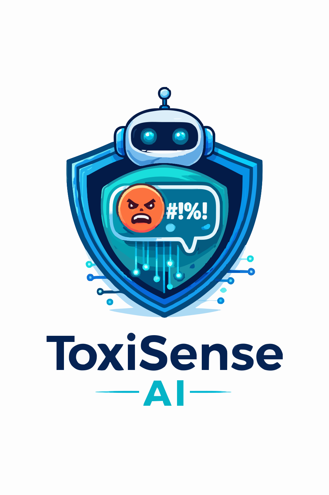

Always-on browser protection
ToxiSense AI
Browse with a calmer feed. ToxiSense quietly watches public conversations and softens harmful content before it takes over your screen.
Protection is on
Smart Shield
Keep the extension running automatically while you browse YouTube, Reddit, X, and other text-heavy pages.
Hide keeps the page cleaner and quieter.
Blur reduces the impact while keeping context available.
Highlight is useful for demos, research, and review.